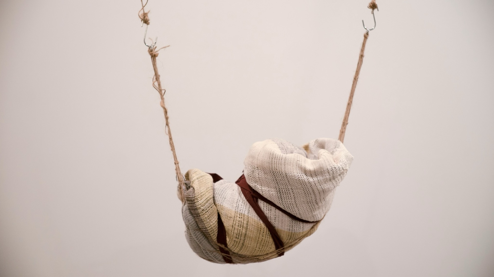
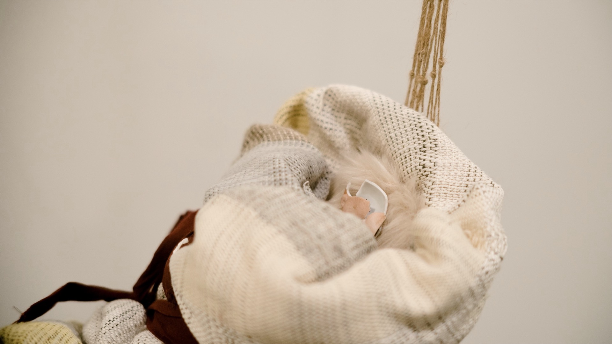
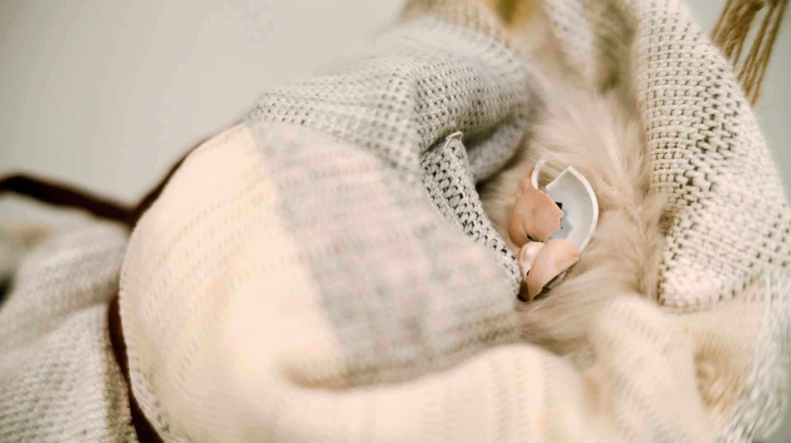
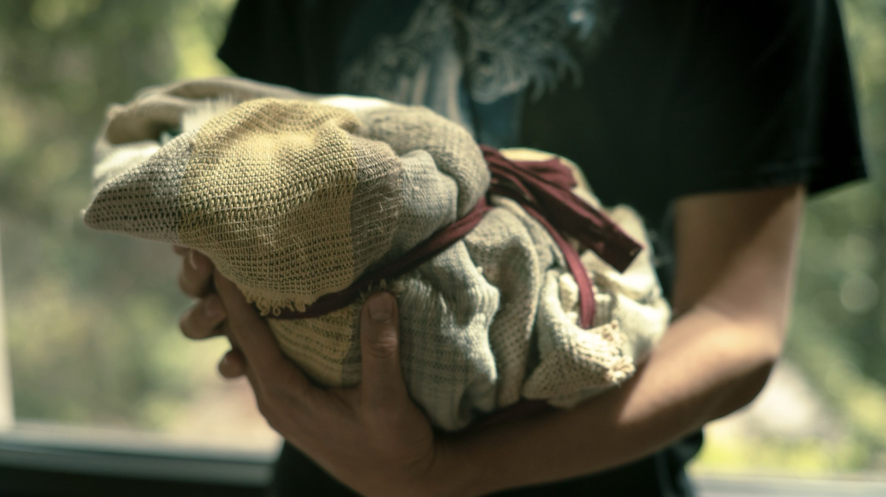

Born to Unwilling Parents
A Weighty Exercise
Born to Unwilling Parents: A Weighty Exercise reflects my ongoing interests in human reproduction and parenthood,situated at a time in the US where individual bodies and human lives are subjected to increasingly banal politicization and objectification.
Arguments in favor of total bans on abortion are often known as “pro-life”. These arguments call for efforts to protect life in its most vulnerable form — supposedly the embryo. However, their protection stop shortly after birth; infants born to unwilling parents, unprepared parents, parent placeholders or no parents at all — now face a poorly supported life to live out as the consequence.
Arguments for total bans on abortion are rarely about protecting individual lives. Lives of the infants and birthing persons are among some of the the least important sacrifices pro-life agenda is willing to make. Born to Unwilling Parents imagines a society in which many infants are brought to life regardless of the birthing persons’ will. It could happen to and around any person. Individuals, birthing or not, might have to learn to cope. In Born to Unwilling Parents, the spectators are invited to encounter an infant born in such an era. Spectators have the options to step in and practice giving care. While caring, willing or unwillingly, emotionally involved or detached, they feel the weight of such care, such consequence and such responsibility.
At the center of this work is the “baby”, an infant-sized object weighing about 8 pounds. Its head is disproportionally small and the body wrapped tightly in a handwoven baby blanket. As the “baby” gets passed around among attendees in the exhibition, each temporary caregiver can decide what to do with the “baby” when it is handed to them. When the “baby” is left unattended, it will cry nonstop. When the “baby” is held by a pair of human hands, the crying will become softer. When the “baby” is actively attended to and gently rocked, the crying will stop. When fully attended to, the “baby” may say a few words.
The crying sound the “baby” produces is randomly chosen from 153 real human baby voice samples that I selected from an open source database: Donate A Cry Corpus. The “baby”s speech are short sentences written by me and vocalized using a real time voice cloning algorithm. Below is a list of what the baby might say:
“I am weighty in your hands”
“I was neither willing nor unwilling”
“Now what”
“What now”
“I wasn’t consulted when I was made”
“I wish this had been about me”
“It’s me who will have to live”
“I am a weighty outcome, a consequence"
“I am undefined”
“I would need to be cared for”
“I wish I could be happy”
“Love me, feed me, play with me”
“Are you ready for me”
“I have to become”
“I’m so tired already”
Born to Unwilling Parents uses an accelerometer to measure the “baby”s movement; capacitive sensing on the handwoven textile to determine the “baby”s proximity with human caregivers; Isadora to host and playback audios; wifi and ESP32 Feather to handle wireless communication.
{kind=link}

{kind=link}

{kind=link}

{kind=link}
